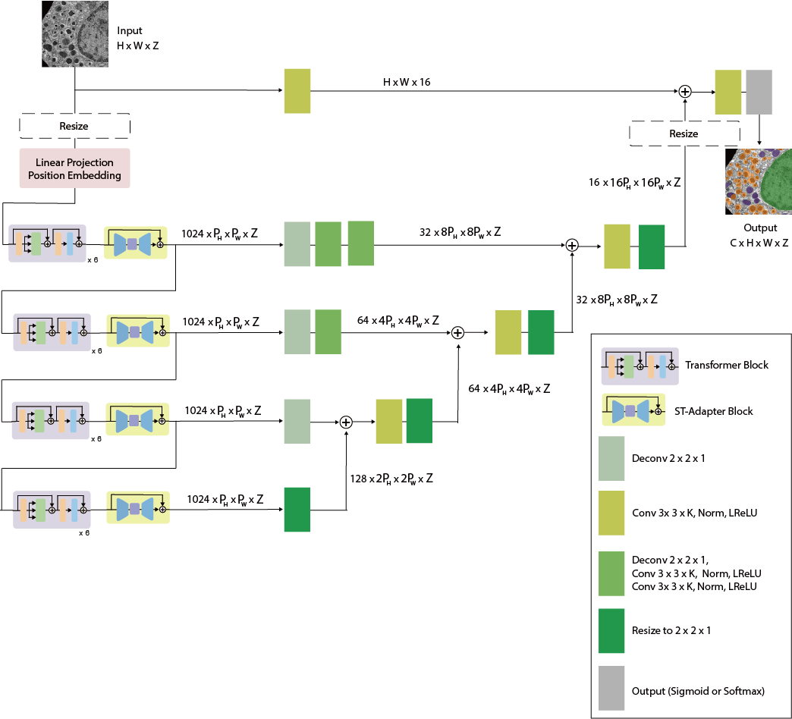

Model Zoo
All models in Napari-OmniEM use the OmniEM core architecture.
OmniEM Architecture

OmniEM is a unified framework for applying a consistent model architecture to multiple electron microscopy (EM) tasks.
Model behavior depends on:
- Task type
- Input dimensionality
Shared backbone, per-task heads
Every model reuses one shared ViT-L backbone: the EM-DINO encoder (tag
4246a479, shown in the GUI as EMDINOv1-ViTL), plus a small per-task head.
The backbone is loaded once and reused by every task that needs it. Running
several models therefore does not reload the encoder, which reduces GPU memory
use.
Weights are stored in a managed folder as one shared backbone_<tag>.pt plus a
head_*.pt per solution. See
Backbone management and Custom
model requirements.
Task types
Models are grouped by the GUI Task Type:
-
Image-to-Image: the output is an image of the same kind as the input (for example, super-resolution or denoising).
-
Image-to-Label: the output is a labeled mask (e.g. mitochondria).
Dimensionality support
OmniEM models can operate in either 2D or 3D mode.
| Model mode | img_z |
Accept 2D Image | Accept 3D Volume |
|---|---|---|---|
| 2D | 1 |
Yes | Yes |
| 3D | > 1 |
No | Yes |
Data type configuration
The datatypes field defines the accepted input dimensionality:
- 2D data
- 3D data
Available models
Every built-in model is a small task-specific head on the shared EM-DINO ViT-L/14 backbone:
| Task | Type | Model | Model context | Required Z | Trained on | Backbone tag | Head tag |
|---|---|---|---|---|---|---|---|
| Denoising | Image-to-Image | emdiffuse-l | 2D (slice-wise) | ≥1 | EMDiffuse (low-noise) | 4246a479 |
e9638f8f |
| Super-resolution | Image-to-Image | emdiffuse-l | 2D (slice-wise) | ≥1 | EMDiffuse (low-level degradation) | 4246a479 |
616dfcbc |
| Mitochondria segmentation | Image-to-Label | ViT-L-2D | 2D (slice-wise) | ≥1 | CEM-MitoLab | 4246a479 |
7c18ec1e |
| Mitochondria segmentation | Image-to-Label | ViT-L-3D | 3D | ≥16 | MitoEM-R | 4246a479 |
2c5f8505 |
Training and fine-tuning OmniEM
To train or fine-tune OmniEM on your own dataset, use the omniem-train repository.
Note
To import an externally trained model into Napari-OmniEM, export compatible weights and configuration metadata.